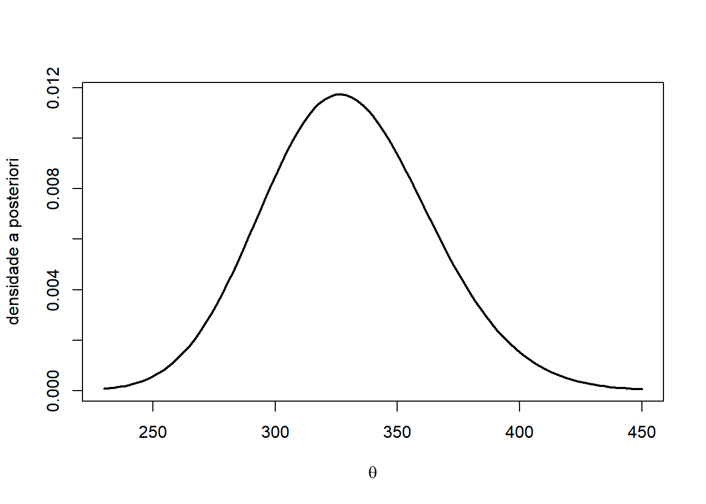
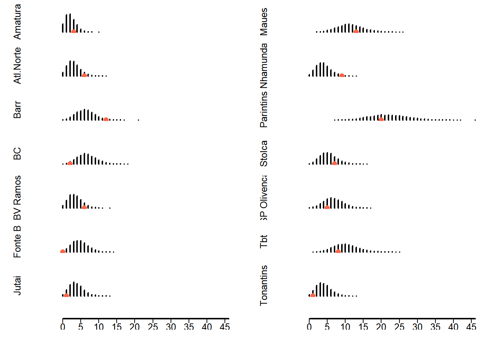

# banco de dados
casos <- c( 3, 6, 12, 2, 6, 0, 1, 13, 9, 20, 7, 5, 8, 1 )
pop <- c(639, 905, 1899, 2036, 1060, 1438, 1143, 3421, 1168, 6700, 1608, 2033, 3095, 1186)
pop <- pop/10^5
municipios <- c( 'Amatura', 'Atl.Norte', 'Barr', 'BC','BV Ramos', 'Fonte B', 'Jutai', 'Maues', 'Nhamunda', 'Parintins', 'StoIca', 'SP Olivenca', 'Tbt','Tonantins')10 O modelo Poisson revisitado
10.1 Verossimilhança, prioris e posterioris
Dizemos que \(X|\theta\) tem distribuição Poisson se sua função de probabilidade é dada por \[f(x|\theta)=\frac{e^{-\theta}\theta^x}{x!},\] onde \(x=0,1,\ldots\) e \(\theta>0\). O parâmetro \(\theta\) é denominado taxa. Para este modelo \[E(X|\theta)=Var(X|\theta)=\theta.\]
Esta é uma das distribuições para contagens mais importantes. A verossimilhança deste modelo, para uma amostra de vaiid, é dada por \[L(\theta)=\frac{e^{-n\theta}\theta^{\sum_{i=1}^{n}x_i}}{\prod_{i=1}^{n}x_i!}.\] O modelo Poisson pertence à família exponencial e sua conjugada é \(\theta\sim\hbox{Gama}(r,s)\), onde \(r\) e \(s\) podem ser interpretados como o total da contagem e o tamanho da amostra .
Neste caso, a é \(\hbox{Gama}(r+\sum_{i=1}^n x_i+r, s+n)\).
A média da é \[E(\theta|\mathbf{x})=\frac{\sum_{i=1}^{n}x_i+r}{n+s}=\frac{n}{n+s}\bar{x}+\frac{s}{n+s}E(\theta),\] onde fica claro que este estimador é uma média ponderada das informações provenientes das duas fontes de informação (sendo \(\bar{x}\) a estimativa de máxima verossimilhança e \(E(\theta)\) a média ).
Se \(n\gg s\), então a média a posteriori dará maior peso para a informação dos dados.
A informação de Fisher é \[\mathcal{I}(\theta)=\frac{1}{\theta}\]
Assim, a priori de Jeffreys é dada por \[f(\theta)\propto \theta^{-\frac{1}{2}},\] sendo, portanto, uma priori imprópria. Contudo, \[f(\theta|\mathbf{x})\propto e^{-n\theta}\theta^{\sum_{i=1}^{n}x_i} \theta^{-\frac{1}{2}},\] logo, a posteriori é própria, tendo distribuição \(Gama(\sum_{i=1}^{n}x_i+1/2,n)\).
Considere a posteriori \(\theta|\mathbf{x}\sim\hbox{Gama}(r_1,s_1)\). Podemos retirar uma amostra da preditiva do seguinte modo:
- Gere \(\theta_j\sim\hbox{Gama}(r_1,s_1)\)
2.Gere \(\tilde{\mathbf{x}}\sim\hbox{Poisson}(\theta_j)\).
10.2 O modelo Poisson para taxas
A taxa é o cociente entre o número de casos de um evento em determinado intervalo de tempo e a população em risco, definida em um espaço e no mesmo intervalo de tempo (``pessoas-tempo’’). Note que, pela definição, a taxa é uma estatística.
Seja \(n\) o tamanho da população no espaço/tempo e seja \(y\) o número de casos do evento de interesse. Então,
\[\hbox{taxa} = \frac{y}{n}\]
Contudo, como \(n\) tende a ser muito maior que \(y\), é comum reportar a taxa vezes \(10^k\), para algum \(k>0\).
Exemplo: Segundo o Anuário de Segurança Pública 2022, em 2021 houveram 68.885 casos de estupro. Considerando uma população de 212,7 milhões de habitantes, a taxa de estupro para aquele ano foi de \[\frac{68.885}{212.700.000}=3,23\times 10^{-4}\] casos por pessoa-ano. Como \(n\) tende a ser maior que \(y\), é comum considerar.
Multiplicando a taxa por \(10^5\), temos uma taxa de 32,3 casos para cada 100.000 habitantes.
Agora,considere que \(\theta\) é o parâmetro taxa. Então,
\[\hat{\theta}=\frac{y}{n}\] é a estimativa para \(\theta\). Como \(y\) é uma contagem, é razoável supor que \[\theta =\frac{1}{n}E(Y|\theta).\] e um modelo possível seria \(y|\theta\sim\hbox{Poisson}(\theta n)\).
Agora, considere que uma população está particionada em \(m\) localidades. Para um dado intervalo de tempo, sejam \(n_i\) e \(y_i\) a população da localidade \(i\) e seu respectivo número de casos observados. Suponha ainda que a taxa \(\theta\) é comum para a pooulação e que \(y_i\) é condicionalmente independente de \(y_j\) dado \(\theta\). Assumindo a distribuição Poisson, teremos
\[L(\theta)=\prod_{i=1}^m\frac{e^{-\theta n_i}(\theta n_i)^{y_i}}{y_i!}\varpropto \theta^{\sum_{i=1}^m y_i}e^{-\theta \sum_{i=1}^m n_i}=\theta^{\sum_{i=1}^n y_i}e^{-\theta N},\] onde \(N=\sum_{i=1}^m n_i\) é o tamanho da população. Como a verossimilhança pertence à família exponencial, temos que o modelo Gama\((a,b)\) é conjugado gerando a posteriori
\[\theta|\mathbf{y}\sim\hbox{Gama}\left(\sum_{i=1}^{m}y_i+a,N+b\right).\]
A prioris impróprias \(\pi(\theta)\varpropto \theta^{-1}\) e \(\pi(\theta)\varpropto \theta^{-1/2}\) geram, respectivamente, as posterioris \(\hbox{Gama}(\sum_{i=1}^m y_i,N)\) e \(\hbox{Gama}(\sum_{i=1}^m y_i+1/2,N)\).
10.3 Exemplo 1: crime de estupro de vulnerável no interior do Amazonas
Os dados a seguir foram cedidos pelo Observatório de Violência de Gênero no Amazonas e compreendem os anos entre 2010 e 2012.
| Cidade | vitimas | Populacao feminina |
|---|---|---|
| Amatura | 3 | 639 |
| Atalaia do Norte | 6 | 905 |
| Barreirinha | 12 | 1899 |
| Benjamin Constant | 2 | 2036 |
| Boa Vista do Ramos | 6 | 1060 |
| Fonte Boa | 0 | 1438 |
| Jutai | 1 | 1143 |
| Maues | 13 | 3421 |
| Nhamunda | 9 | 1168 |
| Parintins | 20 | 6700 |
| Santo Antonio do Ica | 7 | 1608 |
| Sao Paulo de Olivenca | 5 | 2033 |
| Tabatinga | 8 | 3095 |
| Tonantins | 1 | 1186 |
Considerando a priori \(\pi(\theta)\varpropto \theta^{-1/2}\) teremos:
# posteriori
a_post <- sum(casos) + .5
b_post <- sum(pop)
curve(dgamma(x,a_post,b_post),230,450 ,lwd = 2, xlab = expression(theta), ylab = 'densidade a posteriori' )
Abaixo, simulamos 50.000 amostras da preditiva a posteriori
B <- 50000 # número de simulações da preditiva a posteriori
m <- length(casos)
pred_mun <- NULL
for(i in 1:5000){
theta <- rgamma(1, sum(casos) + .5, sum(pop))
pred_mun <- rbind(pred_mun, rpois(m , theta * pop))
}
pred_mun <- data.frame(pred_mun)
names(pred_mun) <- municipios
boxplot(pred_mun)
points(1:14,casos, pch=16,cex = 1.2, col ='tomato')
oo <- par()
mat <- matrix(1:m,ncol=2)
mat <- rbind(mat, c(15,16))
layout(mat, heights = rep(1,14,.5,.5))
for(i in 1:m){
freq <- prop.table( table(pred_mun[,i]) )
par(mar = c(1,5,1,1), cex = .8)
plot.new()
plot.window(xlim=c(0,46), ylim = c(0,.3))
points(as.numeric(names(freq)), freq, type='h', lwd = 2)
title(ylab=municipios[i])
points(casos[i],0,pch=16,col='tomato',cex= 1.2)
}
par(mar = c(2,5,0,1))
plot.new()
plot.window(xlim=c(0,46), ylim = c(0,.1))
segments(0,.05,46,.05,lwd=2)
for(j in seq(0,45,5)){
segments(j,.05,j,.03)
text(j,.01,j)
}
par(mar = c(2,5,0,1))
plot.new()
plot.window(xlim=c(0,46), ylim = c(0,.1))
segments(0,.05,46,.05,lwd=2)
for(j in seq(0,45,5)){
segments(j,.05,j,.03)
text(j,.01,j)
}
par(oo)Warning in par(oo): parâmetro gráfico "cin" não pode ser especificadoWarning in par(oo): parâmetro gráfico "cra" não pode ser especificadoWarning in par(oo): parâmetro gráfico "csi" não pode ser especificadoWarning in par(oo): parâmetro gráfico "cxy" não pode ser especificadoWarning in par(oo): parâmetro gráfico "din" não pode ser especificadoWarning in par(oo): parâmetro gráfico "page" não pode ser especificadop <- NULL
for(i in 1:m){
p[i] <- 2*min(mean(pred_mun[,i] > casos[i]),
mean(pred_mun[,i] < casos[i]))
}
data.frame(municipios,p) municipios p
1 Amatura 0.3304
2 Atl.Norte 0.0668
3 Barr 0.0344
4 BC 0.0200
5 BV Ramos 0.1384
6 Fonte B 0.0000
7 Jutai 0.0588
8 Maues 0.5032
9 Nhamunda 0.0108
10 Parintins 0.6520
11 StoIca 0.3416
12 SP Olivenca 0.4220
13 Tbt 0.4020
14 Tonantins 0.0456